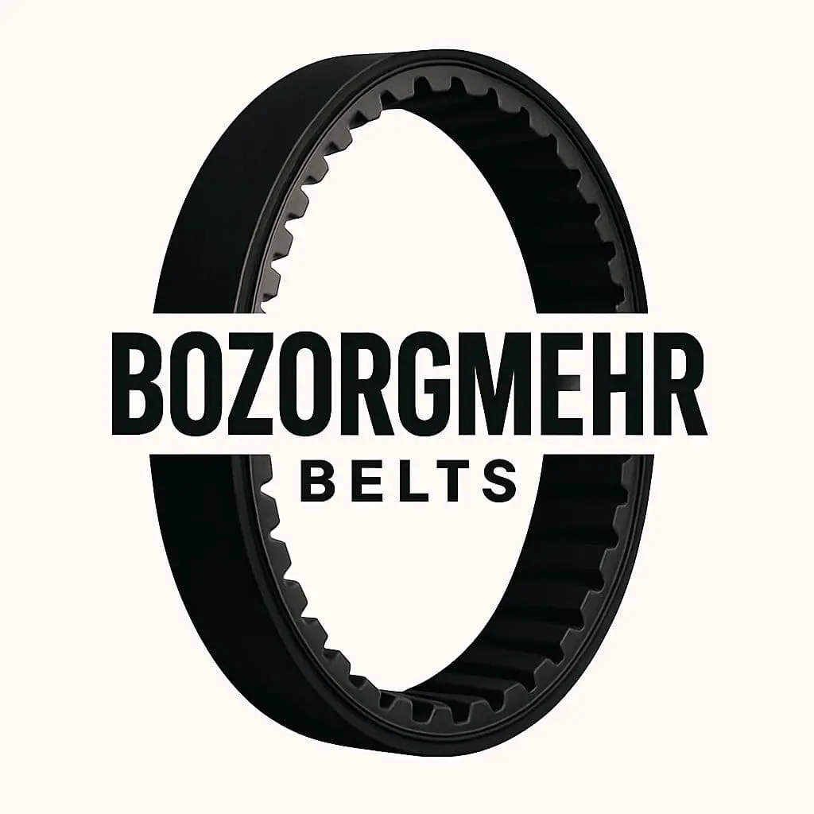

فروشگاه تسمه بزرگمهر با سالها فعالیت تخصصی، یکی از مراکز معتبر تأمین و فروش انواع تسمه صنعتی در تهران، خیابان سعدی جنوبی است. این مجموعه بهصورت تخصصی در زمینه فروش و عرضه تسمههای انتقال نیرو، تایمینگ، پروانه، شیاری، جوشی، دورمتغیر و تسمه نقاله PVC فعالیت میکند و پاسخگوی نیاز صنایع سبک و سنگین میباشد.
در تسمه بزرگمهر، کیفیت، اصالت کالا و رضایت مشتری در اولویت قرار دارد. تمامی محصولات از برندهای معتبر داخلی و خارجی تأمین شده و همراه با مشاوره فنی تخصصی ارائه میشوند تا مشتریان بتوانند متناسب با نوع دستگاه، شرایط کاری و بودجه خود، بهترین انتخاب را داشته باشند.
با تکیه بر تجربه کاری، موجودی کامل، تنوع سایز و مدل، شبکه تأمین گسترده و ارسال سریع به سراسر کشور، تلاش ما بر این است که نیاز کارخانهها، کارگاهها، تعمیرکاران و صنعتگران بدون ایجاد وقفه در تولید تأمین شود.
جهت دریافت اطلاعات فنی، استعلام قیمت روز و انتخاب تسمه مناسب، میتوانید با کارشناسان فروش تسمه بزرگمهر تماس حاصل فرمایید.
تسمه صنعتی یکی از اجزای اصلی انتقال نیرو در ماشینآلات و تجهیزات صنعتی است که وظیفه انتقال انرژی و حرکت بین پولیها را بر عهده دارد. این قطعه در صنایع مختلفی مانند خودروسازی، صنایع غذایی، کشاورزی، نساجی، بستهبندی، معدن، نفت و پتروشیمی کاربرد گسترده دارد.
انتخاب صحیح تسمه صنعتی باعث افزایش راندمان دستگاه، کاهش استهلاک قطعات و جلوگیری از توقف تولید میشود. تسمههای ارائهشده در فروشگاه بزرگمهر مطابق با استانداردهای بینالمللی ISO و DIN و از مواد اولیه باکیفیت تولید شدهاند.
تهران، خیابان امیرکبیر، ابتدای سعدی جنوبی، پاساژ ایران (بلوک ۷ غربی)، واحد ۴۰۱
تلفن: 021-33929881, 021-36871848